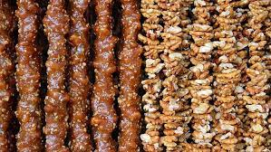
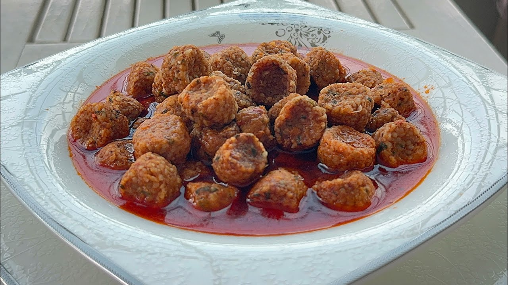
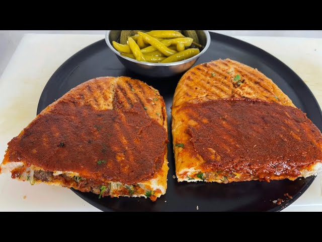

Elazığ Mutfak Kültürü
Doğu'nun Kadim Lezzeti

Doğu Anadolu'nun köklü şehirlerinden Elazığ, zengin mutfak kültürüyle dikkat çeker. Et yemekleri, yöresel salçalar ve kurutulmuş ürünlerle öne çıkan Elazığ mutfağı, yüzyılların birikimiyle damaklarda derin izler bırakır.
Elazığ mutfağı, geleneksel pişirme teknikleriyle hazırlanan köfteleri, meşhur orcik tatlısı ve ev yapımı salçalarıyla benzersiz bir lezzet deneyimi sunar. Yöreye has üzüm ürünleri de önemli yer tutar.
- Et ağırlıklı geleneksel yemekler
- Doğal salça ve baharat kullanımı
- Yöresel ev yemekleri
- Orcik ve üzüm ürünleri
Öne Çıkan Yemekler ve Mekan Önerileri

Orcik
Üzüm suyu, ceviz ve unla yapılan, Elazığ'ın meşhur geleneksel tatlısı.
Nerede Yenir?
- 📍 Orcik Baba
- 📍 Elazığ Yöresel Ürünler Pazarı
- 📍 Harput Tatlıcısı

Harput Köfte
Bulgur, kıyma ve çeşitli baharatlarla hazırlanan yöresel Elazığ köftesi.
Nerede Yenir?
- 📍 Harput Sofrası
- 📍 Elazığ Köftecisi
- 📍 Geleneksel Tatlar Evi

Salçalı Köfte
Salça ve baharatla lezzetlendirilmiş, tencerede pişen nefis köfte yemeği.
Nerede Yenir?
- 📍 Elazığ Ev Yemekleri
- 📍 Köftemiz Lokantası
- 📍 Fırat Sofrası